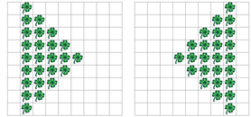
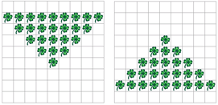

 
Schreiben Sie ein Programm, das die Welt horizontal spiegelt, und ein Programm, dass die Welt vertikal spiegelt.
Testen Sie Ihr Programm an Welten verschiedener Grössen (gerade und ungerade Anzahl Spalten bzw. Zeilen).